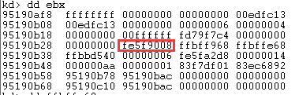
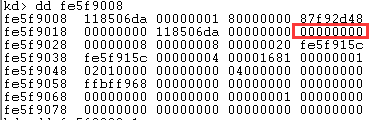
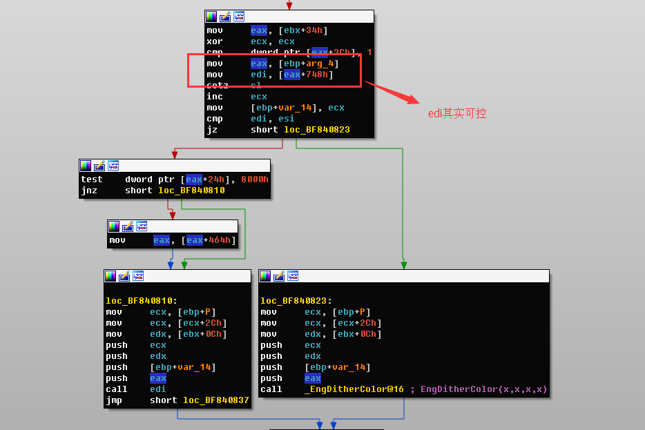
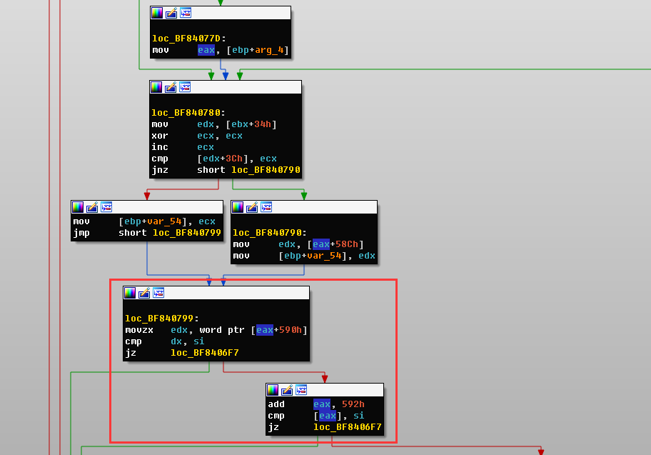
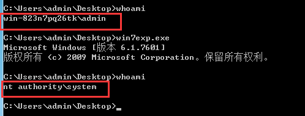

CVE-2016-0095从PoC到Exploit
利用Vmware进行双机调试
- 使用管理员模式运行cmd
- bcdedit /copy {current} /d “Windwos7[DEBUG]”
- 开启调试
bcdedit /debug ON和bcdedit /bootdebug ON - 在Vmware的设备管理添加一个串口
\\.\pipe\com_1 - 执行
Windbg.exe -b -k com:port=\\.\pipe\com_1,baud=115200,pipe
注意 vmware 有个坑，默认添加打印机占用串口com1口，所以我们开启内核调试的串口就变成了com2，不过只要删除了com1即可。
利用VirtualKD和Vmware双机调试
Vmware利用串口进行双机调试就一个感受，慢。串口波特率115200也就是传输速度在14KB/s左右。
VirtualKD下载地址: http://virtualkd.sysprogs.org/download/
前提
造成BSoD的代码拿来直接编译不了，稍微修改了一下:
- 加入了
#include <tchar.h> - 声明
WIN32KAPI：#define W32KAPI DECLSPEC_ADDRSAFE - 获取
KiFastSystemCall的地址:PVOID addr_kifastsystemcall = (PVOID)GetProcAddress(LoadLibrary("ntdll.dll"), "KiFastSystemCall");
修改后的源代码如下：
|
使用vs2015编译，放到虚拟机运行不了，提示缺少VSRUNTIME140.dll，此时装一个vc++ 2015的运行环境即可。运行后直接蓝屏重启。
这个PoC对应的是一个内核漏洞，所以需要使用虚拟机进行双机调试。
然后执行程序，Windbg捕获到异常：
|
发现程序在此崩溃，首先看调用栈：
|
随后，使用ln看一下，
|
崩溃发生在win32k.sys中的bGetRealizedBrush函数。此时eax为0，eax+24h = 0x00000024，内存不可读取，造成BSoD。
然后使用ida载入win32k.sys，看bGetRealizedBrush函数。
|
可以看到，eax是从ebx+34h获取的。ebx则是第二个参数。

取到的eax为fe5f9008，

eax+1ch为0，现在需要知道+1ch是什么东西。
|
回溯到win32k!NtGdiFillRgn当程序准备调用win32k!EngPaint时候：
|
函数的声明如下：
int __stdcall EngPaint(struct _SURFOBJ *a1, int a2, struct _BRUSHOBJ *a3, struct _POINTL *a4, unsigned int a5)
可以得到fe5fadb8=>_SURFOBJ;9760baf8=>_BRUSHOBJ
然后在win32k!bGetRealizedBrush下断点，断下来后看参数。
|
发现
|
9760baf8+34h的值为fe5fada8，这个值恰好为fe5fadb8+10h，所以fe5fada8+1ch = fe5fadb8+10h+ch
打开brush.h看到_SURFOBJ结构体定义为：
|
所以，漏洞的本质是_SURFOBJ->hdev没有定义导致引用不可读内存，造成访问违例触发BSoD。
利用
x86的win 7 不存在 零页内存分配保护和SMEP。
所谓SMEP是一种安全措施，就是不能在内核态执行用户态的代码。
|
利用BaseAddress参数在零页内存中分配空间，但是当BaseAddress指定为0时，系统会寻找第一个未使用的内存块来分配，而不是在零页内存中分配。所以指定BaseAddress为1即可。
|
之后我们只需要找能控制程序指令流程的点，也就是call或者jmp一个我们可以改变的值上。因此我们找到了如下可能可以利用的点。
第一点
|
第二点
|
第三点
|
回溯了整个函数发现eb[+arg_8]也就是这个函数的第三个参数其实我们是无法控制的。再会看第二点，寻找edi的来源，发现其实edi是可控。

可以发现edi来源与[[ebp+arg_4]+748h]不过此时[ebp+arg_4]是0，所以我们可以分配零页内存控制748h的数据。控制了edi就可以控制程序指令流程执行我们的token-steal shellcode来完成token的替换。
接下来需要控制程序执行到这里，继续回溯。

程序要走到我们能控制的地方需要图中红框的条件成立，经调试si=1。看到eax其实是0，所以需要控制590h和592h的值均为1。
最终我们的exploit如下：
|
一定要注意，token-steal shellcode这个函数一定要有四个参数，以为call edi的时候传入了四个参数，如果不写参数会导致堆栈不平衡造成BSoD（如果在shellcode中平衡堆栈也可以）。
执行结果

参考
http://blog.nsfocus.net/null-pointer-vulnerability-defense/
https://www.whitehatters.academy/intro-to-windows-kernel-exploitation-3-my-first-driver-exploit/
http://blog.csdn.net/one_in_one/article/details/51766912
https://whereisk0shl.top/ssctf_pwn450_windows_kernel_exploitation_writeup.html
https://github.com/k0keoyo/SSCTF-pwn450-ms16-034-writeup